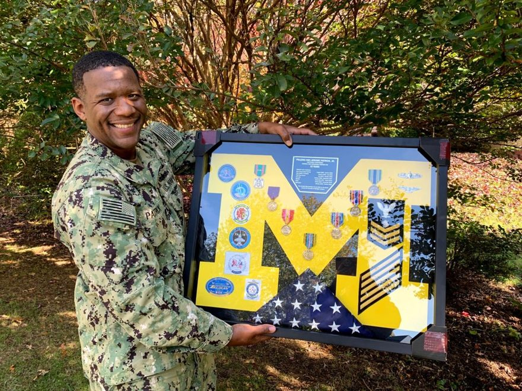
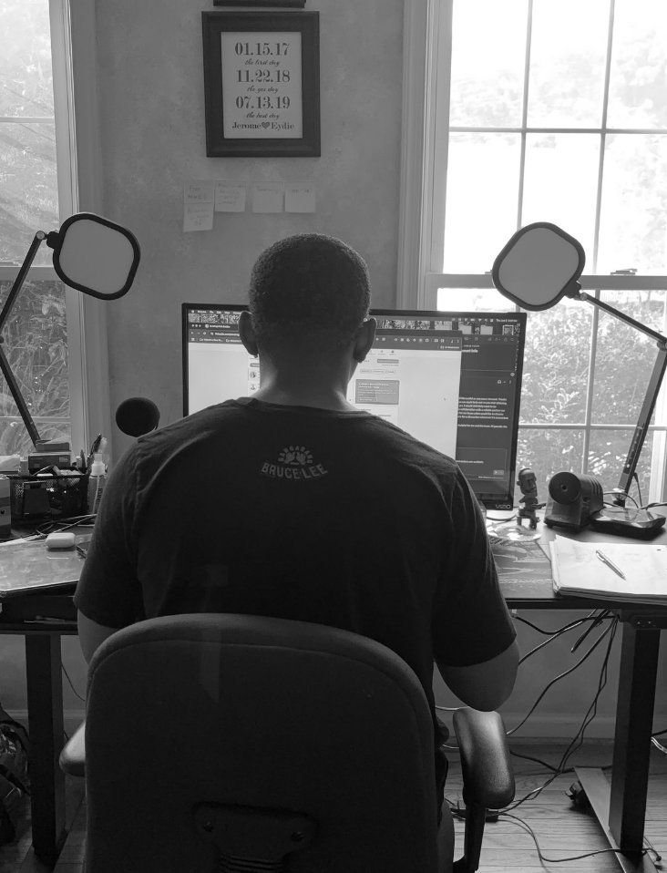
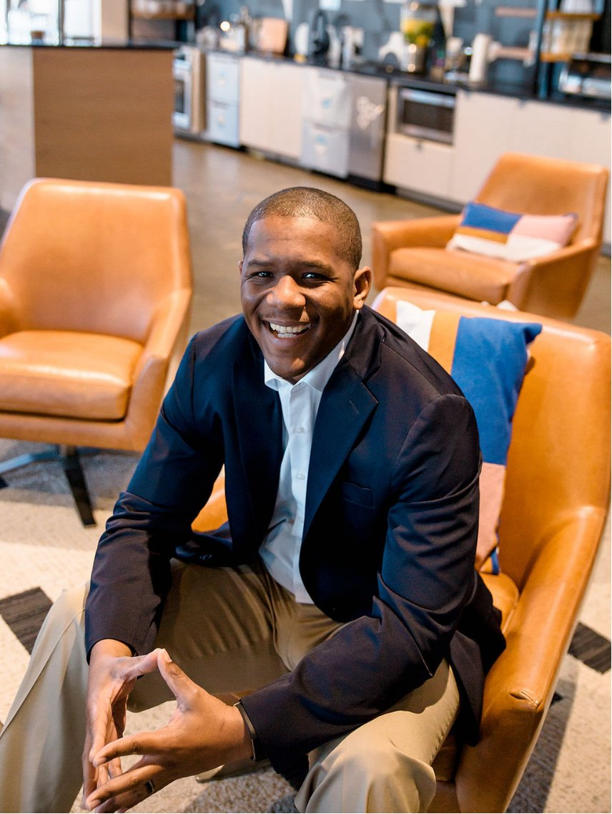

Jerome Patrick Jr./Founder, Local Cosmos · Civic Product Architect
I design systems for better local life.
I'm Jerome Patrick Jr. — a Civic Product Architect and founder of Local Cosmos. I work across design, technology, AI, and community to build products and systems that help local economies work better.
Currently Building
Local Cosmos
An activation company for local economies.
Local communities generate enormous amounts of information — businesses, events, destinations, organizations, amenities, culture, and activity — but that information is fragmented across websites, spreadsheets, social media, databases, and people's heads.
Local Cosmos is exploring a better local information infrastructure: systems that help communities understand what's happening, keep information current, improve discovery, and activate their local economies.
Local intelligence
The Local Operating Information System — for collecting, verifying, organizing, connecting, and activating local information.
Selected Work
Things I've built.
Products, systems, and prototypes at different stages of the same process — discovered, designed, built, and put into the real world.
StoryGoggles
An AI-assisted social listening and article analysis tool conceived, designed, and built for a seven-analyst federal team. Standardized intelligence reporting and freed analysts for higher-value work. Now live as a public product at storygoggles.com.
Trukfoo
A two-sided marketplace connecting food trucks, consumers, and venues through real-time discovery and booking. Founded from scratch — discovery research, service design, team building, and product roadmap all owned in-house. IdeaFest Finalist.
USPS Passport Service Redesign
Evaluated the USPS passport appointment service end to end. Developed current-state and future-state service maps that identified friction across scheduling, mobile usability, and error recovery. Prototyped redesigned workflows and facilitated stakeholder review sessions with business, IT, and customer-facing teams to validate improvements.
LOIS
The Local Operating Information System — the data and AI infrastructure at the center of Local Cosmos, a local-discovery ecosystem connecting communities to events, businesses, and experiences. LOIS pairs AI-driven collection with on-the-ground "Localist" relationships to surface information algorithms alone miss.
FestiveFly
A community experience platform connecting residents, vendors, organizers, and municipalities around local events and festivals. Built as a network-effect pair with Trukfoo — one flywheel for food trucks, one for the festivals and fairs around them — with early county partnerships already underway in Virginia.
Custobee
Born from a personal package theft in 2018, Custobee has grown into the Safe Haven Network — a multi-carrier system for secure package storage, routing, and recipient pickup, with a patent-pending return-to-resale extension that turns reverse logistics into local commerce. Hofstra Veteran Ventures Challenge semifinalist.
About
The throughline.
I'm a multidisciplinary product thinker, designer, strategist, and builder interested in how technology can improve everyday systems.
I learned early in the Navy to look beyond the immediate problem and understand the system around it. That instinct has followed me across product design, service design, AI, civic technology, community, branding, and entrepreneurship.
I'm particularly interested in the layer where digital systems meet real human behavior — where better information, better interfaces, and better infrastructure can improve how people experience the places around them.
Today I'm building Local Cosmos and exploring what the next generation of local technology might look like.

Craft
How I work.

I
Research feeds the build.
Research isn't where the work ends. What I learn shapes what gets built, what gets deployed, and what I learn next.
II
Don't hand off. Ship it.
Most designers hand off a recommendation and walk away. I architect and build the tools the research calls for. StoryGoggles wasn't a brief — it was a problem I saw and solved.
III
Systems, not screens.
Good service design accounts for every touchpoint — digital, human, operational. I work from the frontline user back to the executive suite, because the experience is the whole system, not just the interface.
Credentials
Education &
certifications.
University of Virginia
Product Management Certification
2024
IDEO U
Foundations in Design Thinking
2022
Productboard Academy
Build Outcome-Driven Roadmaps
2024
Foundations of UX Design
2023
Amplitude
Analytics Foundations
2024
Kaplan University
MBA, Marketing
Graduate
Codecademy
HTML & CSS
2021
What I Do
What I Build With
Additional Technical Experience
Contact
Let's build something useful.
Whether we just met or you're working on something in local economies, civic technology, or AI products — I'd like to hear about it.
